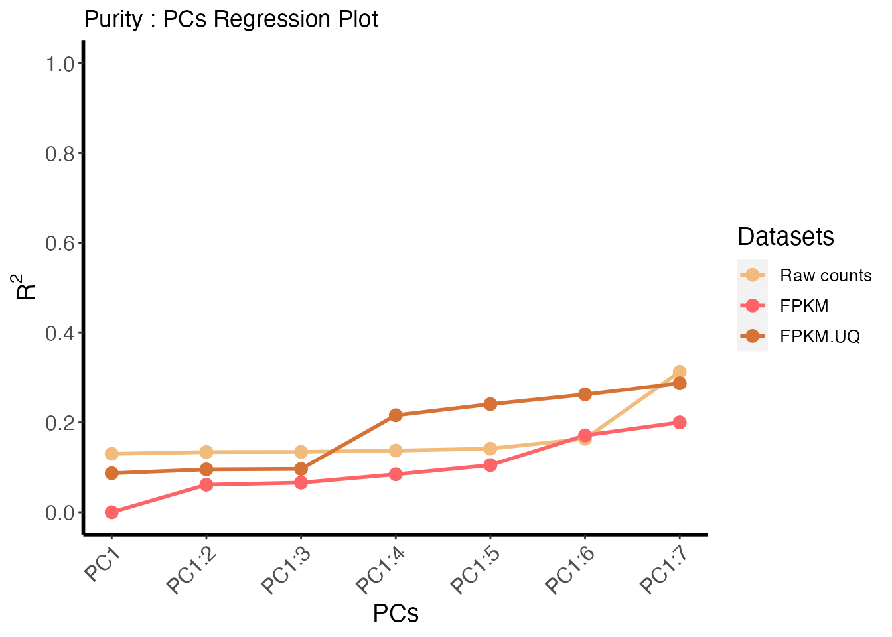
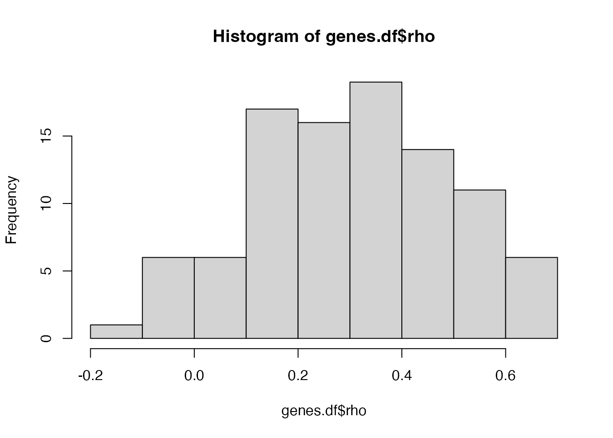
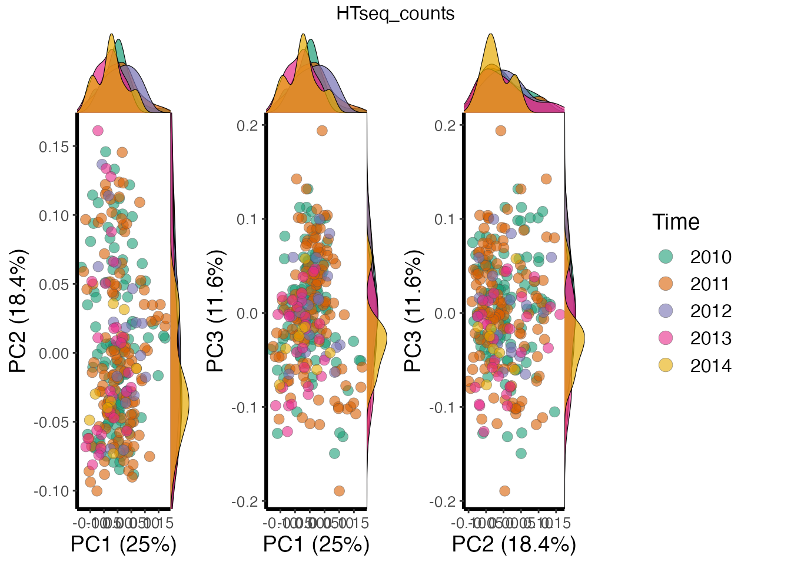
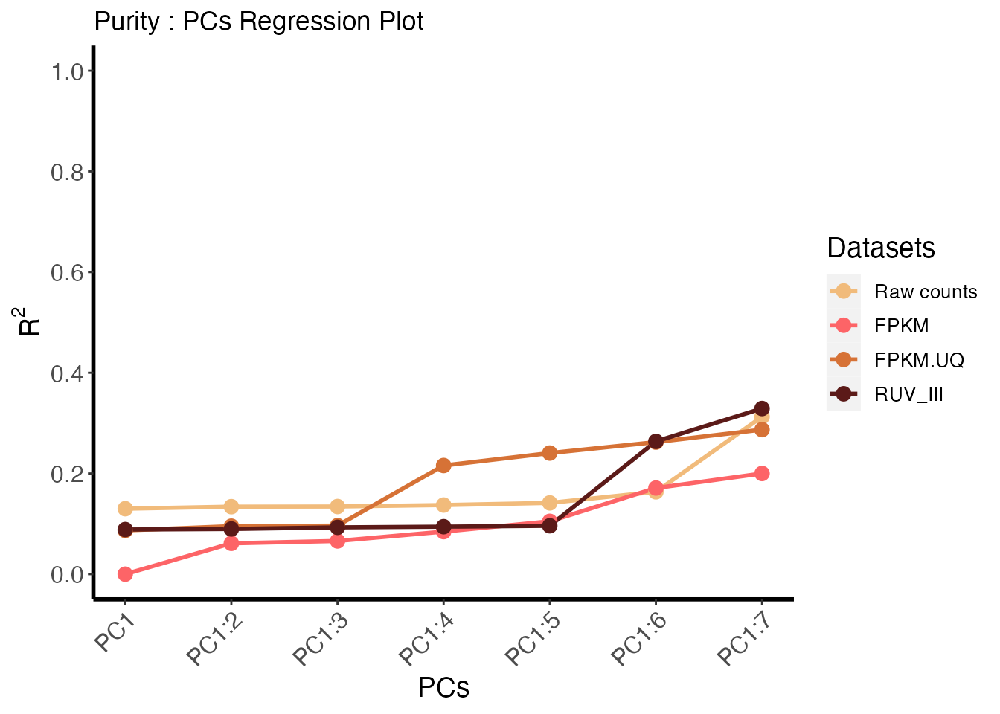

vignettes/tcgaCleaneR_vignette.Rmd
tcgaCleaneR_vignette.RmdLast updated on: 2022-05-03
The Cancer Genome Atlas (TCGA) datasets are an extensive set of Cancer datasets widely used in Cancer research and clinical publications. The TCGA Research Network has cataloged different molecular information of 33 human cancer types to increase our biological insight into cancers. One major aspect of TCGA cancer research uses the gene expression data gathered from the Gene expression experiments that are conducted to better understand the biological mechanisms in cells and tissues. But Gene expression data is almost always compromised by unwanted variation that may lead to inaccurate and wrong biological results and retractions. Effective removal of unwanted variation such as batch effects is one of the main challenges of the analysis of gene expression data, particularly when the data comes from large and complex experiments.
The goal of the tcgaCleaneR package is to minimize this challenge and help users to analyse and handle these unwanted variations. This package acts as a tool to let users account for the unwanted variations in their research and publications.
data("brca.data")
brca.data
#> class: SummarizedExperiment
#> dim: 100 1196
#> metadata(0):
#> assays(3): HTseq_counts HTseq_FPKM HTseq_FPKM.UQ
#> rownames(100): TSPAN6 TNMD ... CROT ABCB4
#> rowData names(9): EnsemblGene_ids Gene_symbol ...
#> NanostringPanCancer_HK sinscorePanCancer_HK
#> colnames(1196): TCGA-A8-A06Z-01A-11R-A00Z-07
#> TCGA-A8-A08F-01A-11R-A00Z-07 ... TCGA-5T-A9QA-01A-11R-A41B-07
#> TCGA-BH-A0H9-11A-22R-A466-07
#> colData names(12): Samples Tissues ... CPE SubtypesThe package contains a highly condensed version of the original dataset with 100 unique genes and 1196 samples. The data consists three individual data that can be accessed using . Sample meta-data describing the samples can be accessed using , and is a DataFrame that can store any number of descriptive columns for each sample row. Similarly, Gene meta-data describing the genes can be accessed using , and is a DataFrame that can store any number of descriptive columns for each gene row.
gene.annot <- as.data.frame(SummarizedExperiment::rowData(brca.data))
sample.info <- as.data.frame(SummarizedExperiment::colData(brca.data))
raw.count <- as.data.frame(SummarizedExperiment::assay(brca.data, 'HTseq_counts'))
df1 <- filterGenesByBiotypes(data=brca.data,gene.type=c("protein.coding"))
df2 <- filterLowExprGenes(data=df1,gene_count = 20,sample_size = 200)
df3 <- filterSamplesByPurity(data= df2,purity_cutoff= 0.496)
df4 <- filterSamplesByLibSize(data = df3, ls_cutoff = 17.5)
# Is data input for PCA logical
is.logical(df4)
#> [1] FALSE
df5 <- computePCA(data = df4, nPcs = 7, is.log = FALSE)
# Generated 7 PCs for first two genes
head(df5[['HTseq_counts']]$sing.val$u,2)
#> [,1] [,2] [,3] [,4]
#> TCGA-A8-A06Z-01A-11R-A00Z-07 0.00837821 -0.04277808 0.049303063 -0.1373556
#> TCGA-AN-A0AK-01A-21R-A00Z-07 0.08050782 0.01882850 0.008960697 0.1368417
#> [,5] [,6] [,7]
#> TCGA-A8-A06Z-01A-11R-A00Z-07 -0.01708428 -0.02702201 0.03422395
#> TCGA-AN-A0AK-01A-21R-A00Z-07 -0.04703139 0.03489068 0.06995316
library(tidyverse)
df6 <- plotPCsVar(pca.data = df5, data = df4, type = "purity", nPCs = 7)
df6
df7 <- computeCorr(data = df4, is.log = FALSE, type = "librarysize", cor.method = 'spearman', n.cores = 1)
head(df7)
#> genes rho pvalue adj.pvalue
#> 1 TSPAN6 -0.014011 8.141417e-01 8.227117e-01
#> 2 TNMD 0.101134 8.890726e-02 1.016083e-01
#> 3 DPM1 0.454888 6.550866e-16 2.734274e-15
#> 4 SCYL3 0.424801 7.165718e-14 2.645804e-13
#> 5 C1orf112 0.415310 2.868200e-13 9.494731e-13
#> 6 FGR 0.194973 9.565599e-04 1.350438e-03
df8 <- computeANOVA(data = df4, variable = "Time", is.log = FALSE, n.cores = 1)
head(df8)
#> Genes FValue PValue Adj.PValue Mean
#> TSPAN6 TSPAN6 1.8204 1.250015e-01 0.2068990263 11.82
#> TNMD TNMD 0.3240 8.617789e-01 0.8992475772 4.88
#> DPM1 DPM1 6.4205 5.901803e-05 0.0002463361 11.35
#> SCYL3 SCYL3 5.4375 3.140347e-04 0.0011595126 11.08
#> C1orf112 C1orf112 3.3842 1.004762e-02 0.0224318996 9.88
#> FGR FGR 3.1498 1.482167e-02 0.0323381873 8.06
library(ggplot2)
library(cowplot)
checkNegCtrlGenes(data =df4, ncg_set= c("Microrray_HK"), group='Time', plot_type="DensityPlot", nPcs=10, npcs = 3, is.log=FALSE)
sample.info <- as.data.frame(SummarizedExperiment::colData(df4))
expr.data <- as.matrix(SummarizedExperiment::assay(df4, 'HTseq_counts')) # gene expression data
sample.info$ls <- colSums(expr.data) # adding library size variable
df9 <- createPRPS(expr.data, sample.info, librarySize = 'ls', batch=c('Year', 'Plates'), biology = 'Subtypes', purity='Purity_singscore',include.ls=T, include.purity=T, minSamplesPerBatchPS = 3, minSamplesForPuirtyPS = 3,
minSamplesForPurityPerBiology = 12, minSamplesForLibrarySizePerBatch = 6,
minSamplesForLibrarySizePS = 3)
#> PRPS are generated for batch effects
#> PRPS are generated for library size effects
#> PRPS are generated for purity effects
### data input
library(SummarizedExperiment)
### PRPS values
prps.batch <- df9$ps.batch
colnames(prps.batch) <- unlist(lapply(
colnames(prps.batch),
function(x) strsplit(x, '-')[[1]][1]
))
prps.ls <- df9$ps.ls
prps.purity <- df9$ps.purity
raw.data <- as.matrix(SummarizedExperiment::assay(df4, 'HTseq_counts'))
ruv.data <- cbind(raw.data ,prps.batch ,prps.ls, prps.purity )
ruv.data <- t(log2(ruv.data + 1))
### replicate matrix
ruv.rep <- ruv::replicate.matrix(row.names(ruv.data))
gene.annot <- as.data.frame(SummarizedExperiment::rowData(df4))
### NCG sets
ncg.set <- colnames(ruv.data) %in% gene.annot$Gene_symbol[gene.annot$RNAseq_HK == 'yes']
#library(BiocParallel)
#library(BiocSingular)
df10 <- runRUV_III_PRPS(ruv.data = ruv.data, ruv.rep = ruv.rep, ncg.set = ncg.set, k=1, return.info = TRUE)
#library(SummarizedExperiment)
gene.annot <- as.data.frame(SummarizedExperiment::rowData(df4))
sample.info <- as.data.frame(SummarizedExperiment::colData(df4))
ruv.iii.adj <- t(df10$new.ruv.data[1:ncol(raw.data) , ]) # transpose
raw.count <- SummarizedExperiment::assay(df4, 'HTseq_counts')
raw.count <- log2(raw.count + 1)
fpkm <- SummarizedExperiment::assay(df4, 'HTseq_FPKM')
fpkm <- log2(fpkm + 1)
fpkm.uq <- SummarizedExperiment::assay(df4, 'HTseq_FPKM.UQ')
fpkm.uq <- log2(fpkm.uq + 1)
RUV_III <- ruv.iii.adj
combined_data <- SummarizedExperiment(assays = list(HTseq_counts = raw.count, HTseq_FPKM = fpkm,
HTseq_FPKM.UQ = fpkm.uq, RUV_III = RUV_III),
colData = sample.info,
rowData = gene.annot)
df11 <- computePCA(data = combined_data, nPcs = 7, is.log = TRUE)
plotPC(pca.data = df11, data = combined_data, group = "Time", plot_type = "DensityPlot", pcs.no = 1:3)
df12 <- plotPCsVar(pca.data = df11, data = combined_data, type = "purity", nPCs = 7)
df12